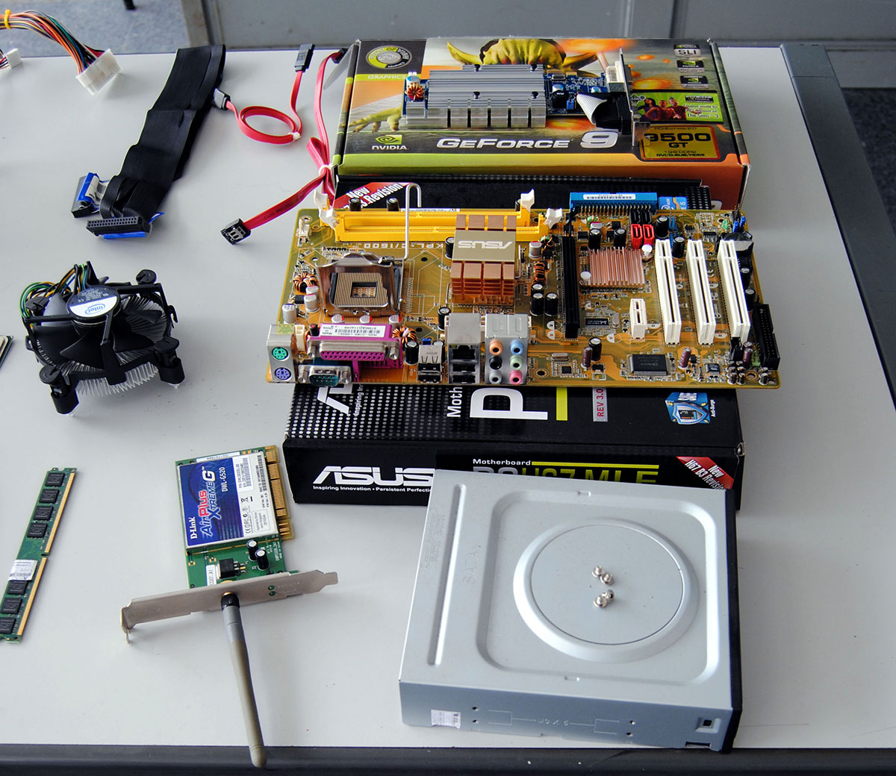

assemblaggio computer
Il montaggio del PC comprende l'installazione delle sue parti principali: dalla preparazione del case, all'inserimento dell'alimentatore,all'introduzione del microprocessore nella scheda madre, all'inserimento della memoria RAM e le schede periferiche negli alloggiamenti presenti sulla scheda madre, alla chiusura del case e al test del funzionamento corretto del sistema montato.